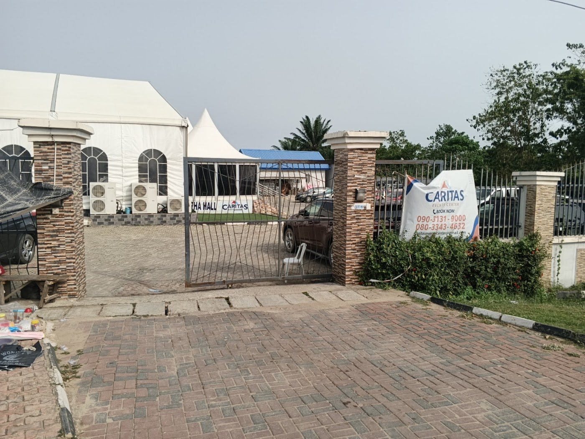
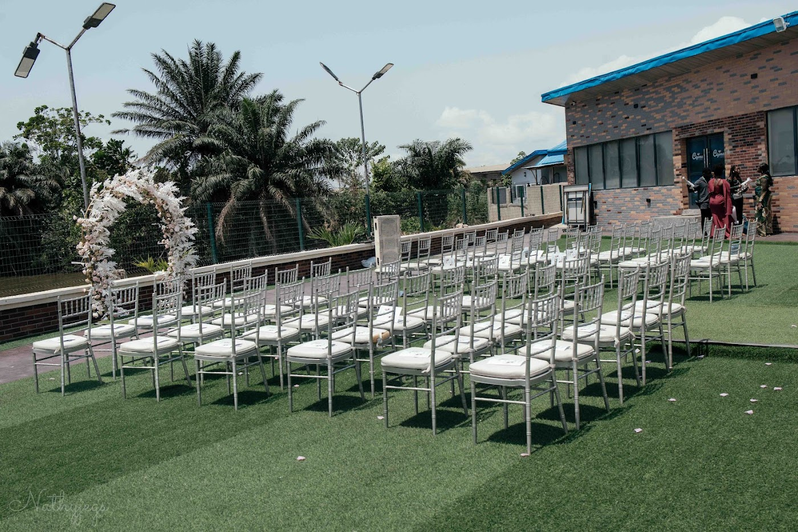
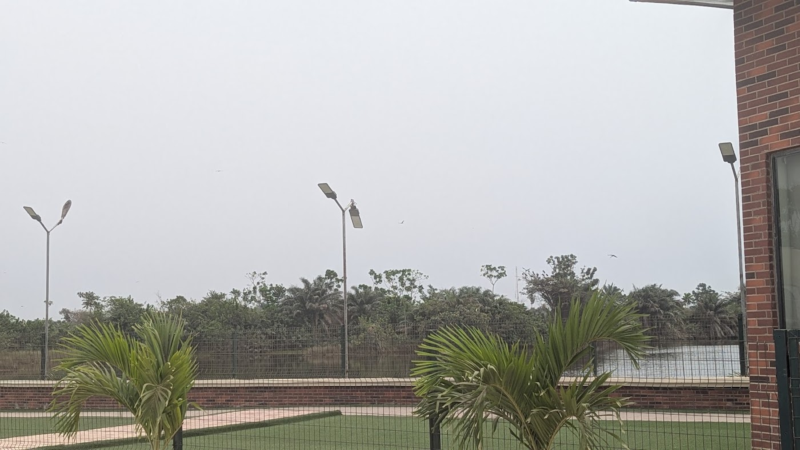

500guests
The large hall Name to confirm
Weddings and big receptions. Stage and sound set-ups.
- Own space, own set-up
- Parking on site
A wide compound in Ikorodu with three halls, a lakeside garden and parking on site. Room for 500 guests, and a view they will remember.
Park on site, walk to your hall, and step outside to the water. Three halls stand on one compound, so a wedding, a birthday and a meeting can each have their own space on the same day.

Three halls, side by side. Pick by the number of guests, then come and see it.
Weddings and big receptions. Stage and sound set-ups.
Birthdays, naming ceremonies and anniversaries.
Meetings, trainings and small parties.
A good day is also a comfortable one. These are the things every host asks about first.
Walk down the white aisle with the lake behind you. Take your photographs in the evening light. Let your guests step out and breathe.



Guests mention the view and the car park. The finished site shows their own words.
Yes, on site. Number of spaces to confirm
You see the hall first, then a deposit holds the date. The amount and the cancellation rules are shown before you pay. Rules to confirm
Yes. The three halls are separate, so up to three events can run at the same time.
To confirm with Caritas
To confirm with Caritas
Four details. It opens WhatsApp with your message ready to send.